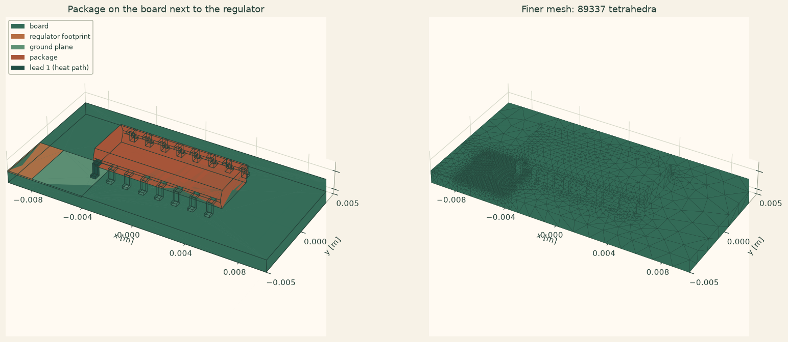

Docs › Examples › Heat transfer in a surface-mount package
Heat conduction · 3D
Heat transfer in a surface-mount package
A voltage regulator heats a circuit board; one lead of a SOIC-16 package carries the heat through a copper strip to the silicon die, which dissipates 20 mW itself.
Run locally with OneSimulation. The example downloads are free. Running them requires an activated runtime. OneSimulation 1.0 · CPython 3.13 on macOS (Apple Silicon), Ubuntu 22.04 (x86-64), and Windows x64. Installation and activation · View pilot plans. Scope of the reference checks.

What it computes
All 22 parts (board, regulator footprint, ground plane, package, die, strip, 16 gull-wing leads) are named bodies of one STEP assembly; OneSimulation meshes them with conforming tetrahedra refined in die, strip and ground plane, assigns the conductivity by part name and solves 3D steady heat conduction with a fixed-temperature footprint and convective cooling, on two meshes. The script that builds the STEP file comes with the notebook.
What it checks
The maximum die temperature is 46.85 C on 89,337 tetrahedra (46.69 C on 31,779), 0.75 K below the benchmark value of 47.6 C and rising with refinement; the air removes 103.2 mW, of which 83.2 mW come from the regulator; lead 1 reaches 48.9 C while the lead on the far side stays at 30.2 C.
Geometry
The notebook starts at the import of the CAD file surface_mount_package_heating.step: STEP (AP242), readable by any CAD program, with the names of the faces that the boundary conditions use. Put it next to the notebook.


The geometry script
The script surface_mount_package_heating_geometry.py builds the geometry with the CAD objects of OneSimulation and writes the file. Change a dimension there, run it, and run the notebook again.
"""Geometry of the OneSimulation example "Heat transfer in a surface-mount package".
Builds a 16-pin small-outline package (SOIC-16) on a circuit board next to the footprint of a voltage
regulator with the CAD objects of OneSimulation and writes all parts as one STEP assembly,
surface_mount_package_heating.step, with the named parts board, footprint, ground_plane, package,
die, strip and lead_1 ... lead_16. The footprint keeps its top face as the group regulator.
Dimensions in mm, written in m.
"""
from onesim.cad.d2 import Profile
from onesim.cad.d3 import Assembly, Box, Prism
mm = 1e-3
box = lambda x0, x1, y0, y1, z0, z1: Box(
length=(x1 - x0) * mm,
width=(y1 - y0) * mm,
height=(z1 - z0) * mm,
origin=(x0 * mm, y0 * mm, z0 * mm),
)
footprint = box(-10.0, -8.0, -5.0, -1.0, -1.0, -0.9)
footprint = footprint.grouped(regulator=footprint.boundaries.z_max)
ground_plane = box(-8.0, -4.0, -5.0, -1.0, -1.0, -0.9)
board = box(-10.0, 10.0, -5.0, 5.0, -1.9, -0.9) - footprint - ground_plane
die = box(-0.5, 0.5, -0.5, 0.5, -0.05, 0.05)
strip = box(-4.645, -4.245, -1.95, 0.2, -0.025, 0.025) | box(
-4.245, -0.5, -0.2, 0.2, -0.025, 0.025
)
body = Prism(
profile=Profile.polygon(
[
(y * mm, z * mm)
for y, z in (
(-1.95, -0.1),
(-1.72, -0.75),
(1.72, -0.75),
(1.95, -0.1),
(1.95, 0.1),
(1.72, 0.75),
(-1.72, 0.75),
(-1.95, 0.1),
)
]
),
height=9.9 * mm,
axis=(1.0, 0.0, 0.0),
origin=(-4.95 * mm, 0.0, 0.0),
)
package = body - die - strip
gull_wing = (
(-1.95, 0.1),
(-2.55, 0.1),
(-2.55, -0.7),
(-2.85, -0.7),
(-2.85, -0.9),
(-2.35, -0.9),
(-2.35, -0.1),
(-1.95, -0.1),
)
leads = [
Prism(
profile=Profile.polygon(
[(side * y * mm, z * mm) for y, z in gull_wing[::side]]
),
height=0.4 * mm,
axis=(1.0, 0.0, 0.0),
origin=((-4.645 + 1.27 * k) * mm, 0.0, 0.0),
).named(f"lead_{k + 1 if side > 0 else 16 - k}")
for k in range(8)
for side in (1, -1)
]
assembly = Assembly(
parts=(
board.named("board"),
footprint.named("footprint"),
ground_plane.named("ground_plane"),
package.named("package"),
die.named("die"),
strip.named("strip"),
*leads,
)
)
assembly.save("surface_mount_package_heating.step")The notebook
The complete notebook, cell by cell. Run it to produce the figures and the comparison printout.
Circuit-board designers keep heat-sensitive chips away from heat sources. Here the footprint of a voltage regulator is held at 50 °C. Next to it a copper ground plane in the board surface carries lead 1 of a small-outline package (SOIC-16), and a copper strip inside the package connects that lead to the silicon die, which dissipates 20 mW itself. How hot does the die get?
| part (dimensions in mm) | conductivity [W/(m K)] |
|---|---|
| circuit board \(20\times10\times1\) with the regulator footprint \(2\times4\) | 0.3 |
| copper ground plane \(4\times4\times0.1\) | 400 |
| plastic package body \(9.9\times3.9\times1.5\) with tapered side walls | 0.2 |
| silicon die \(1\times1\times0.1\) | 130 |
| copper interconnect strip, 0.4 mm wide | 40 (see below) |
| 16 aluminium gull-wing leads, \(0.4\times0.2\) cross-section | 238 |
The real strip is a 5 µm copper film. It conducts heat only along its length, so it is modelled 50 µm thick with a tenth of the conductivity: the same conductance per width, \(kd=2\times10^{-3}\) W/K, with a thickness the tetrahedra can resolve.
The heat equation \(\nabla\cdot(k\nabla T)+Q=0\) holds with \(Q=2\times10^8\) W/m³ in the die. The regulator footprint (footprint.regulator) is fixed at 50 °C; every other outer face is cooled by air at 30 °C with \(h=50\) W/(m² K). All 22 parts are named bodies of the CAD file surface_mount_package_heating.step, written by surface_mount_package_heating_geometry.py with the CAD objects of OneSimulation; load returns the assembly, and the conductivity is assigned by the names of its parts.
Reference. The maximum die temperature of this benchmark configuration is 47.6 °C. A mesh study and the heat given off to the air accompany the comparison.
import numpy as np
from onesim.cad.d2 import Plane
from onesim.cad.exchange import load
from onesim.materials import IsotropicSolid, regionwise
from onesim.meshing import LocalRefinement, TetrahedralMesher
from onesim.numerics import Numerics
from onesim.numerics.fem import FiniteElement, Lagrange
from onesim.numerics.linear import AlgebraicMultigrid, ConjugateGradient
from onesim.physics.heat_transfer import (
ConvectiveHeatFlux,
FixedTemperature,
HeatConduction,
)
from onesim.results.integration import mean_value, measure
from onesim.simulation import Problem, Simulation
from onesim.visualization import plots, theme
theme.set()Geometry and mesh
Conforming tetrahedra over all parts; the mesh is refined in the die, the strip and the ground plane. Two meshes differ in the size there.
assembly = load("surface_mount_package_heating.step")
regulator = assembly.boundaries["footprint.regulator"]
air = assembly.boundaries.all - regulator
leads = [f"lead_{k}" for k in range(1, 17)]
fine_parts = {"die": 1.0, "strip": 0.5, "ground_plane": 1.0}
mesh_for = lambda scale: TetrahedralMesher(
target_size=1.5e-3,
refinements=tuple(
LocalRefinement(
region=assembly.volume_of(name), target_size=0.1e-3 * size * scale
)
for name, size in fine_parts.items()
),
).generate(assembly)
meshes = {scale: mesh_for(scale) for scale in (2.0, 1.0)}
view = plots.Camera(elevation=35, azimuth=-60)
fig = plots.figure(1, 2, size=(15, 6))
plots.geometry(
assembly,
selection={
"board": assembly.volume_of("board"),
"regulator footprint": assembly.volume_of("footprint"),
"ground plane": assembly.volume_of("ground_plane"),
"package": assembly.volume_of("package"),
"lead 1 (heat path)": assembly.volume_of("lead_1"),
},
labels=False,
camera=view,
title="Package on the board next to the regulator",
ax=fig[0],
)
plots.mesh(
meshes[1.0],
groups=("all",),
legend=False,
camera=view,
title=f"Finer mesh: {meshes[1.0].cell_count} tetrahedra",
ax=fig[1],
)
plots.show()Model and solution
regionwise takes the names of the assembly parts as mesh regions. Linear elements on both meshes, solved by conjugate gradients with an algebraic-multigrid preconditioner.
conductivity = {
"die": 130.0,
"strip": 40.0,
"ground_plane": 400.0,
"board": 0.3,
"footprint": 0.3,
"package": 0.2,
**{name: 238.0 for name in leads},
}
material = IsotropicSolid(
density=1000.0,
specific_heat_capacity=1000.0,
youngs_modulus=1e9,
poisson_ratio=0.3,
thermal_expansion_coefficient=0.0,
thermal_conductivity=regionwise(tuple(conductivity.items()), unit="W/m/K"),
)
heat = HeatConduction(
domain=assembly.domain(),
material=material,
heating=regionwise((("die", 2e8),), default=0.0, unit="W/m^3"),
)
problem = Problem(
name="SOIC-16 package next to a voltage regulator",
geometry=assembly,
physics=(heat,),
boundary_conditions=(
FixedTemperature(physics=heat, boundary=regulator, value=323.15),
ConvectiveHeatFlux(
physics=heat,
boundary=air,
heat_transfer_coefficient=50.0,
ambient_temperature=303.15,
),
),
)
numerics = Numerics(
spatial=FiniteElement(element=Lagrange(order=1)),
linear_solver=ConjugateGradient(
preconditioner=AlgebraicMultigrid(),
relative_tolerance=1e-10,
maximum_iterations=3000,
),
)
fields = {
scale: Simulation(problem=problem, mesh=mesh, numerics=numerics)
.solve_stationary()
.field(heat.temperature)
for scale, mesh in meshes.items()
}
field = fields[1.0]Results
The die temperature is the largest value on a grid through the die. The heat given off to the air, \(h\,(\bar T_\text{surface}-T_\infty)\,A\), follows from the mean temperature of the cooled faces; it must exceed the die power by the heat drawn from the regulator.
g = np.linspace(-0.5, 0.5, 21) * 1e-3
die_points = (
np.array(np.meshgrid(g, g, np.linspace(-0.05, 0.05, 5) * 1e-3, indexing="ij"))
.reshape(3, -1)
.T
)
die_power = 2e8 * 1e-3 * 1e-3 * 0.1e-3
print(
"tetrahedra maximum die temperature [°C] against 47.6 °C heat to the air of which from the regulator"
)
for scale, f in fields.items():
heat_out = 50.0 * (mean_value(f, boundary=air) - 303.15) * measure(f, boundary=air)
print(
f"{meshes[scale].cell_count:10d} {f.evaluate(die_points).max() - 273.15:22.3f} {f.evaluate(die_points).max() - 273.15 - 47.6:+18.3f} K"
f" {1e3 * heat_out:14.2f} mW {1e3 * (heat_out - die_power):17.2f} mW"
)
print(
f"lead 1 at the board: {field.evaluate(np.array([[-4.445e-3, -2.6e-3, -0.8e-3]]))[0] - 273.15:.2f} °C, "
f"lead 9 on the far side: {field.evaluate(np.array([[4.445e-3, 2.6e-3, -0.8e-3]]))[0] - 273.15:.2f} °C"
)Figure
The surface temperature, the plane \(z=0\) through die, strip and lead stubs, and the vertical section through lead 1: the heat runs from the regulator through the ground plane into lead 1 and along the strip to the die.
view_options = dict(
component=lambda T, position: T - 273.15, limits=(30.0, 50.0), label="T [°C]"
)
fig = plots.figure(1, 3, size=(18, 5.5))
plots.surface(
field,
camera=plots.Camera(elevation=30, azimuth=-60),
title="Surface temperature",
ax=fig[0],
**view_options
)
plots.section(
field,
plane=Plane(origin=(0.0, 0.0, 0.0), normal=(0.0, 0.0, 1.0)),
contours=20,
xlimits=(-6e-3, 6e-3),
ylimits=(-3e-3, 3e-3),
title="Plane z = 0: die, strip and lead stubs",
ax=fig[1],
**view_options
)
plots.section(
field,
plane=Plane(origin=(-4.445e-3, 0.0, 0.0), normal=(1.0, 0.0, 0.0)),
contours=20,
xlimits=(-5e-3, 0.6e-3),
ylimits=(-1.9e-3, 0.8e-3),
title="Section through lead 1",
ax=fig[2],
**view_options
)
plots.show()Going further
Move the heat path in surface_mount_package_heating_geometry.py: connect the strip to a lead on the far side of the package, or widen the ground plane, write the STEP file again and compare the die temperature. Without the die power the package only conducts regulator heat to the air.